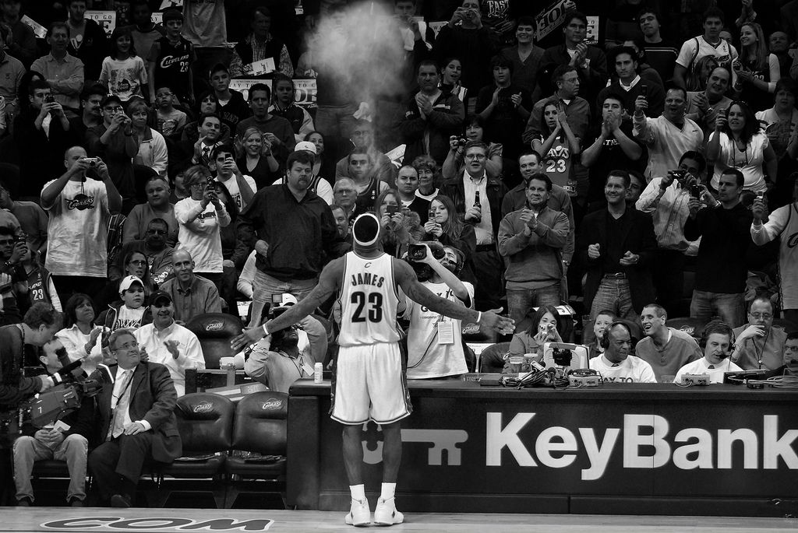
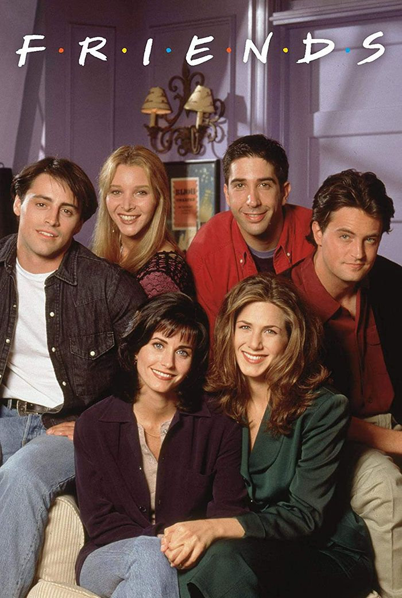
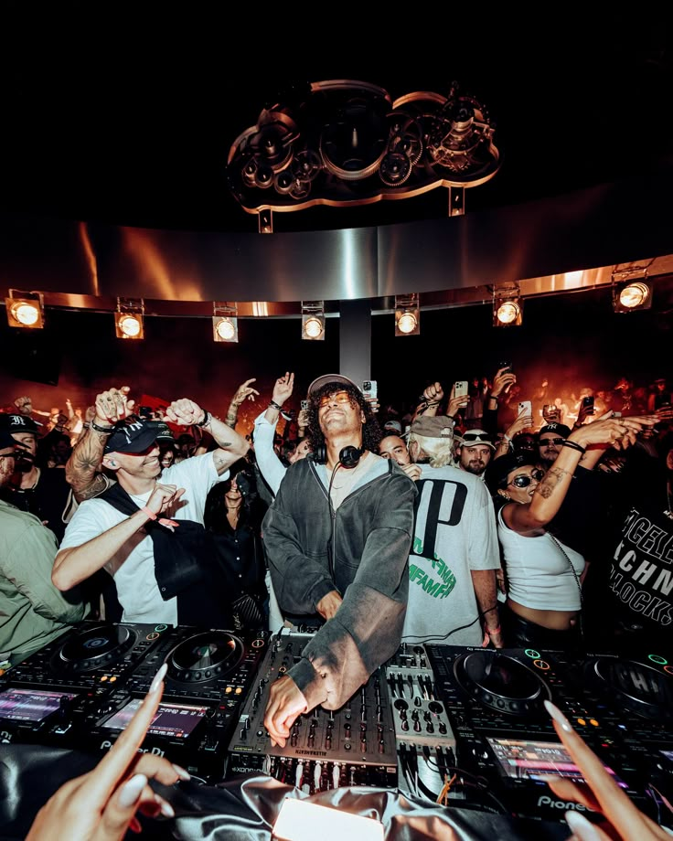

My Bucket List
Things I want to achieve and experience
Hot air balloon ride
I’ve got this vision of myself standing in a wicker basket in the middle of Turkey, probably freezing in the 4:00 AM chill while waiting for the sun to hit the Anatolian plains. Honestly, I’ve seen the photos of Cappadocia all over my feed for years, but I’m tired of just double tapping them because I actually want to be the one up there. I want to feel that weird, heavy heat from the burner hitting my face while everything else is dead silent, just drifting over those fairy chimney rock formations like I’m on another planet. There’s something so surreal about the idea of looking out and seeing a hundred other colorful balloons hitting the horizon at the exact same time the sky turns that perfect shade of sunrise pink. It’s definitely a splurge, but between the cave hotels and the traditional champagne toast once we land in some random field, it feels like the ultimate trip. I’m putting this on my bucket list because I need to experience that specific kind of peace you can only get a few thousand feet up, watching the world wake up before the rest of the tourists even have their coffee.

Watch a live NBA game
I’ve spent way too many nights watching highlights on a tiny laptop screen, so actually being in an NBA arena is a massive priority for me. I want to experience that specific moment when the lights go dim, the bass from the intro music starts shaking the floor, and the starting lineup is announced through a cloud of smoke and pyrotechnics. It’s not just about the game; it’s about finally seeing the sheer scale of the players in person and realizing how much faster and more intense the play is when you aren't watching through a camera lens. I want to be part of that collective roar when the home team hits a massive three-pointer, and I’m honestly looking forward to the whole stadium vibe—the overpriced nachos, the t-shirt cannons during timeouts, and the energy of thousands of people pulling for a win. For me, it’s about checking off a major piece of sports culture and finally being in the stands for a buzzer-beater instead of just reading about it on Twitter ten minutes later.

Personal Goals
To continue growing, learning, and building strong relationships with people around me.

Building Connections
To build lasting friendships and meaningful connections with people from all walks of life.

Dream Home
To own a beautiful home where I can relax, host friends, and build a family in the future.